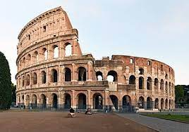
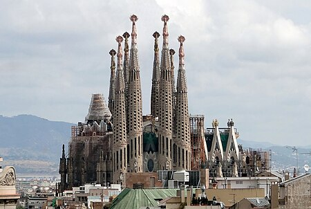

Coliseu de Roma
Coliseu (em italiano: Colosseo), também conhecido como Anfiteatro Flaviano (em latim: Amphitheatrum Flavium; em italiano: Anfiteatro Flavio), é um anfiteatro oval localizado no centro da cidade de Roma, capital da Itália. Construído com tijolos revestidos de argamassa e areia, e originalmente cobertos com travertino é o maior anfiteatro já construído e está situado a leste do Fórum Romano.
Torre Eiffel

Torre Eiffel (em francês: Tour Eiffel, /tuʀ ɛfɛl/) é uma torre de treliça de ferro forjado no Champ de Mars, em Paris, França. Tem o nome do engenheiro Gustave Eiffel, cuja empresa projetou e construiu a torre.Localmente apelidada de "Dama de Ferro" (em francês: La dame de fer), foi construída de 1887 a 1889 como a peça central da Exposição Universal de 1889 e foi inicialmente criticada por alguns dos principais artistas e intelectuais franceses por seu design, mas tornou-se um ícone cultural global da França e uma das estruturas mais reconhecidas do mundo.
Templo Expiatório da Sagrada Família
Templo Expiatório da Sagrada Família (em catalão: Temple Expiatori de la Sagrada Família), também conhecido simplesmente como Sagrada Família, é um grande templo católico da cidade de Barcelona, Catalunha, Espanha, desenhado pelo arquiteto catalão Antoni Gaudí, e considerado por muitos críticos como a sua obra-prima e expoente da arquitetura modernista catalã. Financiado unicamente por contribuições privadas, o projeto foi iniciado em 1882 e assumido por Gaudí em 1883, quando tinha 31 anos de idade, dedicando-lhe os seus últimos 40 anos de vida, os últimos quinze de forma exclusiva. A construção foi suspensa em 1936 devido à Guerra Civil Espanhola e não se estima a conclusão para antes de 2026, centenário da morte de Gaudí.